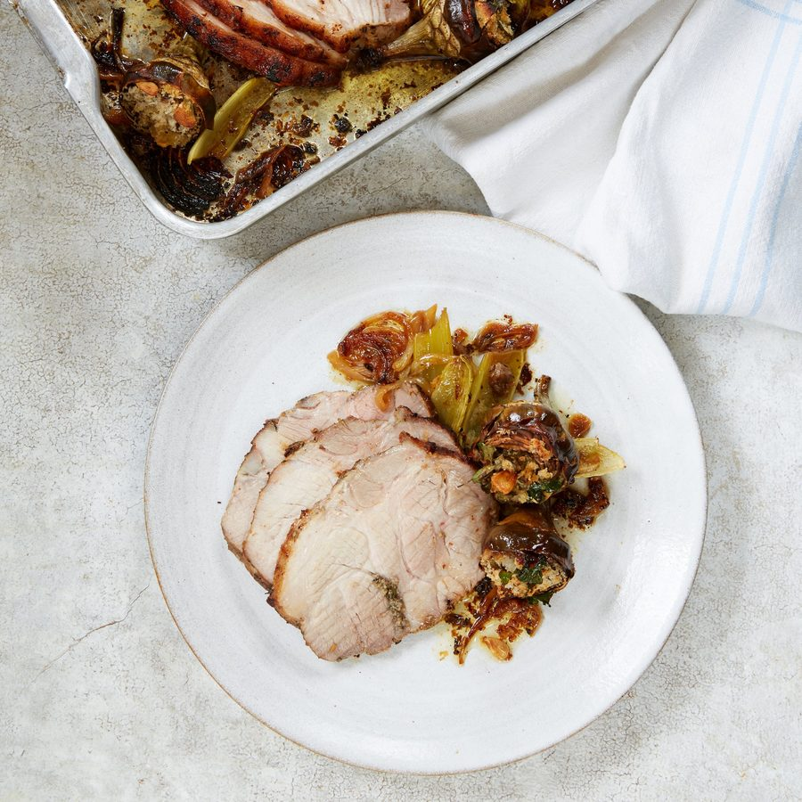

Pork and artichokes

The lavender is pungent, strong and very much an optional extra. I’ve only recently rediscovered this flavour having had a bad early experience with lavender ice-cream. I love it, but if I didn’t have gnarled dry lavender in the front garden, I wouldn’t bother at this time of year.
A day ahead, crush 2 of the garlic cloves in a pestle and mortar with the juniper and fennel seeds. Finely chop the lavender, rosemary and thyme, and add to the garlic with the sea salt and sugar. Mix, then rub it all over the pork and set aside, covered, in the fridge.
The next day, tie the pork up with a piece of string in the middle and at the ends to hold it in a rounded joint shape. Bring to room temperature while you heat the oven to 200C fan/gas mark 7 and prepare the artichokes.
Remove the toughest outer leaves of the artichokes, snapping or cutting them down with scissors. Trim around the base and stem with a small knife. Trim the stalk and the tips to remove the darkest part of the leaves.
Rotate the artichokes upside down and press to open up the leaves a bit and carefully stretch them further with your fingers. Use a teaspoon to scoop out the choke. Rub each one all over with 1 of the lemons, cut in half, to stop them discolouring before you move on to the next.
When all prepped, finely slice a garlic clove and stuff it between leaves of an artichoke with some parsley leaves, breadcrumbs, salt and pepper. Repeat with each one.
Place a casserole on a medium-high heat with a tablespoon of olive oil and sear the pork all over, positioning its best-looking side up when you’re done. Turn the heat off, then surround the meat with the celery, any remaining garlic, the stuffed artichokes, onion, the juice of the remaining lemon and a splash of water.
Cover with a piece of crumpled baking paper and bake for 1¼ hours, or until the pork is hot (above 64C) in the centre.
Leave to rest somewhere warm before slicing and serving.